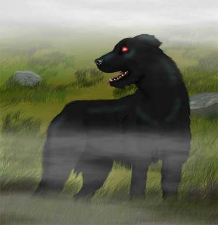

|
 |
Ambiente/Habitat | Outer Planes - Carceri / Paludi e Zone Nebbiose |
| Frequenza | Uncommon / Rare | |
| Organizzazione | Solitary | |
| Periodo di Attività | Qualsiasi | |
| Dieta | Carnivora | |
| Intelligenza | Low intelligence (5-7) | |
| Punti Combattimento | 8 Punti Combattimento | |
| Tesoro | Nessuno | |
| Allineamento Dominante | Caotico Malvagio | |
| Numero di Apparizione | 1 | |
| Classe Armatura | 3 [10 base, -4 corazza, -3 destrezza] | |
| Movimento | 10 esagoni | |
| Dadi Vita | 5 (+8 punti ferita) | |
| Thac0 | 15 | |
| Numero di Attacchi | Morso | |
| Danni | 1d8+2 (Taglio) | |
| Poteri Offensivi | Istinto Predatorio; Malattia; Sbarnare; |
|
| Poteri Difensivi | Robustezza Superiore; Risucchio di Fluido Vitale; Immunità alle armi normali / 5 danni a colpo; Resistenza Superiore all'Acido; |
|
| Poteri Generici | Camminata Acquatica; | |
| Vulnerabilità | Nessuna; | |
| Resistenza alla Magia | 33% | |
| Sensi | Vista Abissale; Sensi Superiori | |
| Dimensioni | Medium (2 m. lungo) | |
| Morale | Elite (13) | |
| Valore in Punti Esperienza | 975 |
| MODIFICATORI AI TIRI SALVEZZA | |||||||||||||||||||||||
| COR | 0 | 45 | ENV | 0 | 51 | MAG | 0 | 59 | MAL | 0 | 44 | MEN | 0 | 57 | RIF | +5 | 46 | ROB | +5 | 44 | VEL | 0 | 46 |
Descrizione
Il Barghest, anche chiamato Mastino del Male, appare come un grosso mastino dal pelo nero pece, dalle grandi fauci e dagli occhi luminosi rosso fuoco che di notte possono vedersi a distanza nel buio.
Combat
l Barghest è un essere malefico errante che si aggira per i territori palustri o le distese nebbiose mietendo vittime e spargendo epidemie. Non esita ad attaccare gruppi o avventurieri feriti ed in difficoltà e se ritiene che costoro siano troppo pericolosi segue a distanza con il proprio fiuto i suoi nemici restando nascosto nella nebbia (ad un 100 metri di distanza) per poi attaccare la sua vittima in un momento opportuno, ad esempio quando la stessa riposa o al termine di un altro scontro.
La natura demoniaca di questo essere gli dona una naturale resistenza alla magia del 33%, inoltre il Barghest è dotato di una speciale vista che gli permette di vedere al buio o nella nebbia più fitta fino a 100 metri di distanza.
Il Barghest attacca mordendo la sua preda con le sue potenti fauci. Ogni morso può contagiare la vittima con la pericolosa malattia di cui il Barghest è portatore, a meno che questa non superi un tiro salvezza contro raggio della morte. Questa tremenda malattia è chiamata la Lebbra del Male.
ISTINTO PREDATORIO (Moderate Special Ability): La creatura possiede un forte istinto predatorio, per tale motivo costei riceve un bonus costante di +1 alla Thac0 con i suoi attacchi.
MALATTIA [MORSO] (Superior Special Ability): Il morso di questa creatura è estremamente infettivo. Le creature che sono morse da questo essere, infatti, devono superare immediatamente un tiro salvezza contro malattia per non infettarsi.
La
Lebbra del Male
Tipo di Contagio:
Esposizione diretta alla fonte
Tiro salvezza:
Senza Modificatori
Incubazione:
1 giorno
Prima fase: 3d6+2 giorni = Il malato ha una febbre molto alta è subisce una penalità di -2 a tutti i suoi tiri, alla classe armatura ed il 30% di fallire gli incantesimi. Tiro salvezza: Malus di - 5 %
Ultima fase: 1 mese = La febbre diminuisce ma la carne del malato inizia a degenerare cadendo letteralmente parzialmente in pezzi per poi raggiungere un punto di equilibrio. Al termine del mese la vittima ormai deforme perderà 2 punti di carisma, 3 punti di appearance, 1 punto di destrezza , costituzione e forza.
Immunizzazione: Permanente
Note: Al termine dell'ultima fase la malattia scompare ma i suoi effetti sulla carne della vittima sono permanenti. Si noti che fino alla fine di tale fase è possibile curare la malattia, ad esempio con una magia di Cure Disease, mentre al temine di questa la vittima potrà recuperare la carne perduta solo con una potente magia di rigenerazione.
SBRANARE [MORSO] (Lesser Special Ability): Quando questa creatura colpisce il proprio avversario con l'attacco indicato può attaccare nuovamente la medesima creatura con lo stesso attacco subendo una penalità di - 1 al tiro per colpire. Si consideri quest'attacco come un attacco multiplo successivo non simultaneo.
ROBUSTEZZA SUPERIORE (Typical Ability): Il fisico della creatura è estremamente robusto. Ciò conferisce alla stessa una robustezza superiore che gli garantisce 8 punti ferita supplementari.
RISUCCHIO DI SANGUE [MORSO] (Superior Special Ability): Ogni volta che questa creatura colpisce con l'attacco indicato un avversario dotato di corpo organico di tipo animale rigenera le proprie ferite nutrendosi del sangue della vittima. In particolare, questa creatura rigenererà immediatamente un ammontare di punti ferita pari alla metà dei danni effettivamente subiti dalla vittima con l'attacco indicato (arrotondato per difetto).
IMMUNITA' ALLE ARMI NORMALI / 5 DANNI A COLPO (Typical Ability): Il corpo della creatura possiede una particolare resistenza ai danni comuni. La creatura, infatti, riduce i primi 5 danni subiti da ogni singolo colpo inferto. I danni provocati dalla magia o dalle armi magiche che siano almeno +1 nonché dagli attacchi fisici ad esse equivalenti non sono in alcun modo ridotti.
RESISTENZA SUPERIORE ALL'ACIDO (Typical Ability): Il corpo della creatura è particolarmente resistente ai danni da acido, per tale motivo la stessa subirà solo la metà (per difetto) di tutti i danni da acido provocati nei suoi confronti.
CAMMINATA ACQUATICA (Lesser Special Ability): Questa creatura è in grado di spostarsi camminando con il corpo parzialmente immerso nell'acqua riducendo di una classe la penalità al movimento che le sarebbe normalmente applicata. Si noti che quest'abilità non riduce l'eventuale penalità al combattimento prevista per il corpo parzialmente immerso nell'acqua
LESSER COMBO
-
SBRANARE
e
RISUCCHIO DI
SANGUE
- Le due abilità costituiscono una combo in quanto la prima permette di attivare
più volte la seconda nel corso di un combattimento.
In considerazione della modesta incidenza questa combo può essere
considerata minore.
Habitat/Society
Il Barghest è un cane demoniaco, utilizzato dai demoni nel piano dimensionale Carceri, vaga spesso anche nel Primo Piano Materiale in cui arriva con l'ausilio della magia o per effetto di riti demoniaci. Nel Primo Piano Materiale il Barghest si aggira all'aperto solo nei territori palustri e nebbiosi evitando accuratamente ogni altro luogo (ad eccezione dei luoghi chiusi dove si trova a suo agio). Il Barghest si nutre esclusivamente di carne fresca e non beve acqua ma esclusivamente il sangue delle sue vittime che divora in ogni loro parte compreso le ossa.
Ecology
Il Barghest è un essere molto intelligente nonostante non sia in grado di parlare e non abbia ricevuto alcuna educazione. Per questo motivo molti esseri, maghi e chierici malvagi provano spesso ad assoggettarlo per utilizzarlo come loro guardia. Il Barghest però è un essere per sua natura infido e malefico che qualora non nutra un vero senso di sudditanza e paura nei confronti di chi lo comanda non esiterà al momento opportuno a ribellarsi od a fuggire.
Mystical Resource Sourge
(Occhi) Quantità: 2, Presenza 10% - Scuola di Magia:
Conjuration/Summoning
- Qualità della Risorsa: Common.
Mystical Resource Sourge
(Lingua) Quantità: 1, Presenza 50% - Effetto Particolare:
Malattia
- Qualità della Risorsa:
Uncommon.